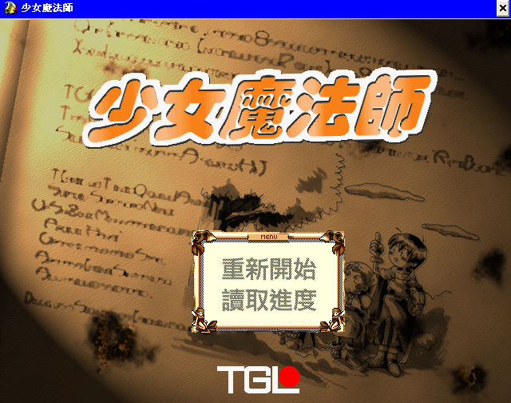
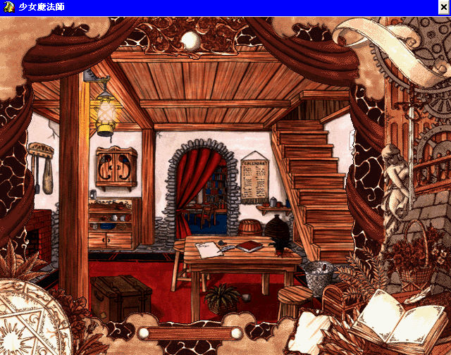
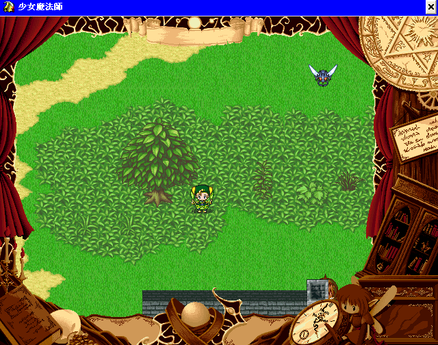

名稱：少女魔法師1 (中文版) 簡介：TGL 1997年出品的動作養成遊戲，由智冠代理發行 [待補]。


保護：光碟 備註：若光碟無法安裝時，請使用TGL通用安裝程式安裝。 限制：螢幕必須設定為256色才能執行。 修改：MAHOU.EXE 1.修正XP以上系統繁中會顯示成日文的問題 6A 00 68 80 00 00 00 6A 00 (共3個) -- -- -- 88 -- -- -- -- -- 檔案：TGLSetup.rar = TGL通用安裝／移除程式 mhupdate.rar = 更新檔